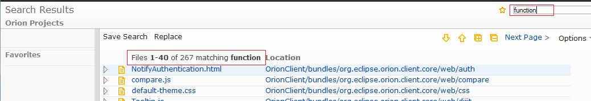
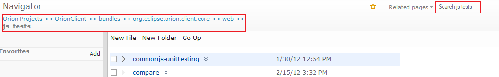
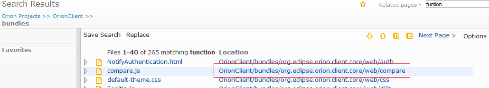
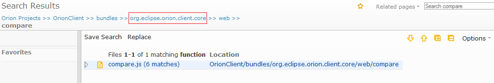
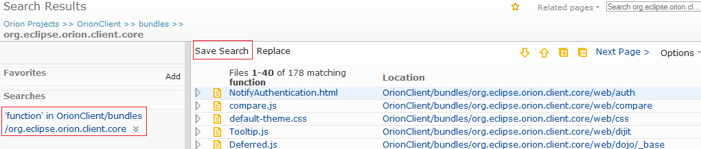
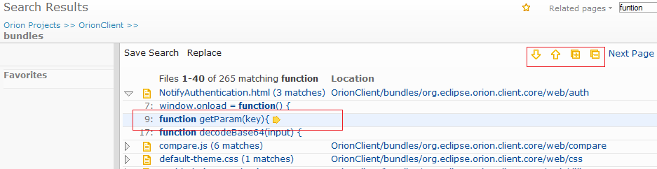
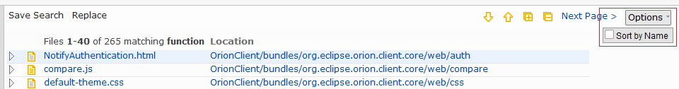
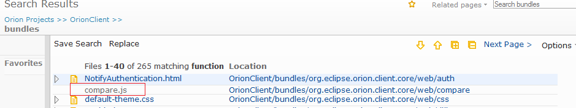

| Search Results page | ||
|---|---|---|
|
|
||
| Replace page | ||
The Search Results page displays files for any search performed in the search entry field in the title area of any page. Each file is expandable to display all the matches with the lines containing the search keyword and the line number. You can use right arrow key to pop up a 5-line context around the line or you can click on any file or match to open the Orion editor to see the whole file at that line. The page is designed to display multiple pages if the result files exceeds 40. There are previous and next page actions in the tool bar for you to go through all the results.

Starting search is very simple: just type or paste a keyword in the search entry field and hit enter. The result will be displayed in the same tab of your browser where you entered the keyword. The header of the result displays the total file number and the number range of the first page. Both literal and wild card search are supported. For example, "fo*ar" will hit all the files containing "foobar" while "fo??ar" will hit the same files. Please also note that the search ignores case.

If you start a search from a page where a folder is presented, or in another word, if bread crumb is presented, the place holder of the search entry field indicates the folder name on which your search will start. Currently the pages supporting this are navigator, git log, editor and search pages. For all other pages, the search will start from the project root. But once you are in the search result page, you can scope up and down the result on the same keyword.

Lets assume that you just searched for "function" on a folder and you got 265 files but you want to see the results on a folder you are interested. You can now click on the location column where the interesting folder is presented. The result will be scoped down to that folder by the same keyword.

If your search result presents a sub folder but you want a broader scope, you can click on any segment in the bread crumb. The result will be scoped up to that folder by the same keyword.

Click Save Search in the tool bar to bookmark a link to this search for future use. Lets say you are searching "foo" on folder "bar". The default name of the saved search is "foo in bar" but you can rename it later to a more meaningful one. Note that this is a bookmark to the search, rather than a specific search result. Clicking on a link in the Searches list of the Favorites panel will perform a new search with the same search terms.

There are 4 actions in the tool bar for navigating matches. Expand all and Collapse all are convenient actions to view all matches or just view the file list. Up and Down allow you to just iterate all the files and matches top-down or bottom-up. While you are iterating, the current row is moving to indicate where you are. You can also jump over to a specific file or match by clicking on that row, which gives a quick switch-over to where you want to start the iteration. The current row is always cached as the browser's cookie based on the search URL. If you leave the page and come back or refresh the page, the current row is restored.
When search result page is loaded, the result pane is focused and the current row is highlighted where you can use the key board navigation. Note that key board navigation is available only when the result pane gets focus. If focus is not on the result pane, just click on any place in the result pane to get it back.

There are two ways to view details on a match. When the current row is on a match, pressing right arrow</> key will pop up a context tip with 5 lines of code around the hit line. Note that if you use up</> and down arrow keys from now, the context tip changes contents when a match is iterated. Use left arrow key to cancel the context tip. If you want to view more details, press enter key or click on the link of the match. This will open the Orion editor with the line located at the matching place.

If the number of matching files exceeds the page size, which is 40 by default, the Next page and Previous page actions will appear in the tool bar. Although it is not recommended to change the search URL, but if you really want to view all the results in one page you can change the rows parameter to the total file number. In the example above you can change rows=265 so that the new search url will look like http://orion.eclipse.org/search/search.html#?sort=Path asc&rows=265&start=0&q=function+Location:/file/B2/bundles/*. Note that changing this to a large number should only be used in some rare cases, such as replacing more than 40 files at once. Please also note that this could slow down the search and introduce server timeout.
The matching files are sorted by the folder names by default. Click on the options on the tool bar and check Sort by Name to invoke the search again sorted by the file names.

Orion search is based on the file indexer on the server side. There may be some rare cases that your updated files are not synced up into indexer yet when you invoke the search. For example, if you search on foo and replace all the matches with bar in a file and then search on foo again right away. Depending on how many files on the server, the indexer may still hit the file but the file does not contain foo any more. In this case the file is greyed out in the result list but if you search gain later it will disappear from the list completely.

There are several limitations that will be addressed in the future releases.
|
|
||
| Replace page |